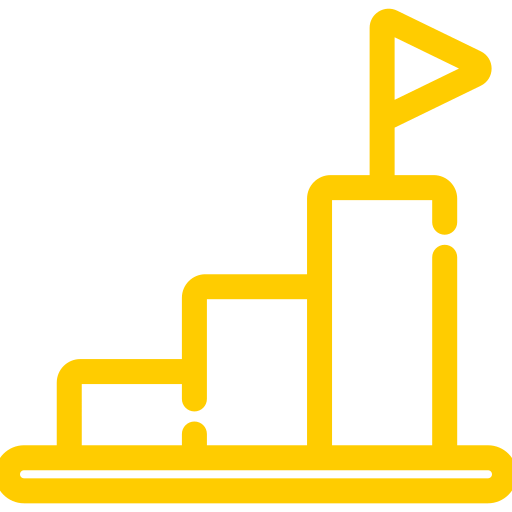

Achievements & Conferences
Guest lecturer: Introduction to AI and ML + use cases
2022, Corvinus University, Business IT club
- We held a lecture to university students about machine learning and its
applications, explaining the difference
between AI, ML, and deep learning, the different concepts
regarding them, and how they are structured. Moreover, we even touched upon
the different algorithms behind machine and deep learning, and the
fields they are applied in. To sum up, we presented some real life
examples that solidified everything taught.
Presentation of our IoT solutions
2022, Budapest, IoT Live Show by Yettel
- Presenting our own IoT solutions and possible ideas for future projects
plus use cases in various industries (e.g. retail), for example via a live demo
and camera to
track eye gazing point and describe the physical traits of the "customers".
Data+AI Summit (by Databricks)
2022, online
-
Data Analysis with Databricks SQL training course
Data Innovation Summit
2022, online
Reinforce Conference
2022, Budapest